SONA_NLP_Python
Introduction
This paper critically analyzes the State of the Nation Address (SONA) speeches delivered by various South African presidents from 1994 to 2023. The primary objective is to categorize each president based on single sentences extracted from their respective SONA speeches. The study unfolds as follows: Initially, a concise literature review is presented, with emphasis on the domain of Natural Language Processing (NLP), particularly focusing on classification tasks within NLP. This review lays the groundwork for the methodologies and approaches applied in later sections of the paper. Subsequent sections offer an in-depth exploration and meticulous cleaning of the data utilized in the study. The exploration phase scrutinizes the dataset’s balance and analyzes the vocabulary used, both overall and by each specific president. These preliminary steps are crucial for ensuring the integrity and reliability of the study’s findings. The paper then transitions to a detailed exposition of the methodologies employed in the study. The methods section elucidates the three feature extraction tools deployed: Bag of Words (BoW), Term Frequency-Inverse Document Frequency (TF-IDF), and Word Tokenization. Additionally, it describes the three predictive models applied, namely Gradient Boosted Trees, Feed Forward Neural Networks, and Support Vector Machines. Each tool and model is presented with a rationale for its inclusion and an explanation of its contribution to the study’s objectives.
Following the methods section, the paper presents and succinctly discusses the study’s results. This section provides an initial interpretation of the findings, preparing the ground for the more in-depth analysis that follows. In the penultimate section, a comprehensive discussion of the results is provided. This discussion delves into the insights gleaned from the findings, offering detailed interpretations and drawing connections with the literature reviewed earlier. This section aims not only to shed light on the study’s findings but also to locate these within the broader academic discourse on the subject. Finally, the paper concludes with a reflective overview of the study as a whole. This concluding section evaluates the study’s successes and limitations, reflects on its contributions to the field, and suggests avenues for future research and exploration. Through this reflective lens, the paper not only summarizes its findings but also invites further scholarly engagement with the questions and challenges raised during the study.
Literature Review
Methods
The methods applied fall into four main categories that also follow the workflow of the project. More specifically, data pre-processing, feature extraction, modelling and model evaluation.
Data Pre-Processing
In the data preprocessing phase before feature extraction, initial data loading was accomplished from text files, with each file containing SONA speeches from different South African presidents from 1994 to 2023. Files were filtered to ensure they were valid, and the president’s names were extracted and cleaned for later use. The speeches within each file were tokenized into sentences using the NLTK library, and any unnecessary newline characters within these sentences were removed. Each sentence was then associated with the relevant president, resulting in a structured data frame containing each sentence alongside its corresponding president’s name. Following this, the data underwent exploratory data analysis (EDA) where sentences associated with specific presidents were filtered out, and sentence lengths were calculated and visualized. The sentences were further cleaned by removing stop words (common words that do not contribute to the meaning of a sentence) and then grouped by president. Subsequently, the cleaned sentences were used for generating word clouds for visual inspection. Furthermore, the most common words across all presidents were calculated and the average words per sentence were computed and plotted for each president.
Feature Extraction
Bag of Words (BoW)
The Bag of Words (BoW) method represents text data as a matrix of token (typically words) occurrences within a given document. Each row of the matrix corresponds to a document, while each column represents a unique token in the dataset. The matrix cell contains the count of occurrences of the token in the document. In mathematical terms, for a set of \(n\) documents \(D\) and a set of \(m\) unique tokens \(T\), the BoW matrix \(M\) is a \(n \times m\) matrix where \(M_{ij}\) is the frequency of token \(j\) in document \(i\)(Akuma et al., 2022). For the dataset in question, each sentence from the president’s speeches is treated as a document. The BoW model tokenizes each sentence into words, creating a matrix that reflects the frequency count of each word within each sentence, yielding a sparse matrix representation of the word distribution in each president’s speech.
Term Frequency-Inverse Document Frequency (TF-IDF)
The Term Frequency-Inverse Document Frequency (TF-IDF) technique assigns a weight to each term in a document reflecting its importance in the document relative to the entire corpus. The TF-IDF value of a term \(t\) in a document \(d\) within a corpus \(D\) is computed as \(\text{TF-IDF}(t, d) = \text{TF}(t, d) \times \text{IDF}(t, D)\), where \(\text{TF}(t, d)\) is the frequency of term \(t\) in document \(d\) divided by the total number of terms in \(d\), and \(\text{IDF}(t, D)\) is the logarithm of the total number of documents in \(D\) divided by the number of documents containing term \(t\)(Akuma et al., 2022). In the context of the dataset, TF-IDF is calculated for each term in every sentence, resulting in a vector of TF-IDF values for each sentence, thereby emphasizing terms that are distinctive to specific speeches or presidents.
Word Embeddings
Sentences from the presidential speeches dataset are tokenized into words. These tokens are then fed into the Word2Vec model, which learns vector representations for each word by predicting the context in which a word appears, effectively capturing the semantic relationships between words(Řehůřek, 2022). Upon training Word2Vec with the tokenized sentences, each word is represented as a high-dimensional vector. To form a representative vector for a complete sentence, the word vectors within each sentence are averaged. This results in a single vector per sentence, encapsulating the semantic essence of the sentence based on its constituent words.
These sentence-level vectors serve as the dataset’s numerical features, providing a semantically rich representation of the sentences for subsequent machine-learning applications in the project. Each vector not only represents its sentence but also mirrors the inherent semantic structure and relationships within the text, offering a meaningful feature set for analysis( Řehůřek, 2022). By employing these methods, the raw textual data from the speeches is transformed into a numerical format suitable for training machine learning models.
Modelling
Note that for each of the following predictive models, each of the three feature extraction methods detailed above are applied.
Gradient Boosted Trees
Gradient Boosting is a general technique where models are built sequentially, with each new model being trained to correct the mistakes of the combined ensemble of existing models. This process is iteratively repeated, progressively improving the model’s accuracy until further improvements are negligible(Brownlee, 2021).
Gradient Boosted Trees (GBTs) inherently leverage an ensemble methodology, combining the predictive power of multiple weak learners, in decision trees, to create a more accurate and robust model. The algorithm incrementally builds an ensemble of trees where each subsequent tree compensates for the errors of the aggregate set of preceding trees(Friedman, 2001). Through this iterative refinement, the algorithm not only enhances its precision but also avoids overfitting, providing a reliable generalization to unseen data.
In our deployment of GBTs, using Yandex’s CatBoost, careful parameter tuning was essential for optimized performance. We engaged 500 boosting iterations, a 0.05 learning rate, and a tree depth of 10. The boosting iterations define the number of trees in the model, with each iteration adding a new tree that corrects the errors of the ensemble. The learning rate, alternatively known as shrinkage, moderates the influence of each tree, preventing any single tree from dominating the ensemble prediction. The tree depth, meanwhile, influences the model’s complexity, with deeper trees allowing for the capture of more complex patterns in the data but at the risk of overfitting. These parameters were selected after running a grid search over hyperparameters choosing the hyperamters which minimised validation error computed using 5-fold cross-validation.
Support Vector Machines
Support Vector Machines (SVMs) is a supervised learning algorithm used for classification tasks. SVMs operate by constructing hyperplanes in a multidimensional space that separates cases of different class labels(Shmilovici, 2005). The SVM algorithm is implemented in practice using a kernel. The kernel trick helps in fitting the maximum-margin hyperplane in the transformed feature space. The hyperplane is selected to segregate classes in the best possible way.
In this project, SVM classifiers were employed with various parameter configurations, and their performance was evaluated based on the processed data obtained through the feature extraction methods previously mentioned. A grid search approach was utilized to explore a range of parameter values and identify the optimal configuration for each data representation method. The grid search was performed over a range of values for the C parameter, different kernel types, and the gamma coefficient for the Radial Basis Function (RBF) kernel. Specifically, the C parameter was explored over the values [0.1, 1, 10]. The C parameter represents the regularization term, controlling the trade-off between having a smooth decision boundary and classifying the training points correctly(Sklearn, 2023).
The kernel parameter, with values ['linear', 'rbf'], specifies the type of hyperplane used to separate the data. The linear kernel is often used when the data is linearly separable, meaning it can be separated by a single line(Sklearn, 2023). The RBF kernel is used for non-linear data, transforming it into a higher-dimensional space where it becomes linearly separable. The gamma parameter, with values ['scale', 'auto'], defines how far the influence of a single training example reaches, with low values meaning ‘far’ and high values meaning ‘close’(Sklearn, 2023).
For the SVM model trained on data represented using Bag of Words, the grid search optimal parameters were C=0.1, a linear kernel and gamma='scale'. When using TF-IDF, the optimal parameters were C=10, a RBF kernel with gamma='scale'. Finally, for Word Embeddings, a C value of 10, a linear kernel, and gamma='scale'.
Neural Networks
The Neural Network (NN) model deployed in this project is a multilayer perceptron (MLP), which is a type of feedforward neural network(Goodfellow et al., 2016). The input data was converted from a sparse to a dense matrix format. The architecture employed was the same across all feature extraction methods as varying the model architecture did not prove to yield any significant difference in model performance across the feature extraction methods.
The architecture of the NN consists of an input layer, a hidden layer, and an output layer. The input layer has 505 neurons, with a Rectified Linear Unit (ReLU) as the activation function. ReLU was chosen due to its effectiveness in mitigating the vanishing gradient problem(Glorot et al., 2011). For the weight initialization for the input layer, the He normal initializer was used. This initializer assists in breaking symmetry and facilitating the learning process(), and ensures a less-naive starting point for the weights(He et al., 2015). Additionally, to avoid overfitting, L2 regularization with a coefficient of \(1 \times 10^{-8}\) was applied.
The hidden layer also uses a ReLU activation function and the He normal initializer, with 220 neurons. L2 regularization using \(1 \times 10^{-7}\) was incorporated. The softmax activation function is used in the final layer to output a probability distribution over the multiple classes.
During the training phase, a stratified 5-fold cross-validation strategy was employed. For each fold, the data was split into training and validation subsets, with the model being trained for 20 epochs. The sparse categorical cross-entropy was selected as the loss function, being appropriate for multi-class classification problems. The Adam optimizer was utilized for its adaptive learning rate capabilities. Following examination of the plot of training versus validation accuracy over epochs, the optimal number of epochs for training was set, and the final model was trained and subsequently evaluated on the unseen test data.
Model Evaluation Metrics
The evaluation of the models’ performance employed a suite of metrics to ensure a comprehensive assessment. The primary metrics used are accuracy and F1-score. Accuracy is defined as the ratio of correctly predicted observations to the total observations:
\(\text{Accuracy} = \frac{\text{Number of Correct Predictions}}{\text{Total Number of Predictions Made}}\)
While accuracy is a straightforward and informative metric, it is not sufficient where the classes are imbalanced. Hence, additional evaluative metrics were incorporated into the assessment framework. Stratified k-fold cross-validation (with \(k = 5\) ) was used during the training phase of Neural Networks (NNs).
Subsequently, confusion matrices were generated for the models. A confusion matrix is a table used to describe the performance of a classification algorithm. Each row of the matrix represents the instances of the actual class, while each column represents the instances of the predicted class. The entries on the main diagonal of the confusion matrix correspond to correct predictions, whereas other entries reflect the mistakes made by the classifier. Through the confusion matrix, the F1-score was computed to provide a detailed understanding of the model’s performance, F1 score is composed of two other metrics in precision and recall. Precision (the ratio of true positive predictions to the sum of true positive and false positive predictions), and recall (the ratio of true positive predictions to the sum of true positive and false negative predictions), are both utilized to form the F1-score (the harmonic mean of precision and recall).
For the Gradient Boosted Trees model, the loss function was an essential aspect of the evaluation. The loss function is a measure used to estimate the discrepancy between the predicted values and actual values. During the training process, the algorithm optimizes the model parameters to minimize this loss function, thereby improving the model’s predictive performance. Monitoring the change in the value of the loss function during the training process provides insights into the convergence and stability of the model, helping in understanding whether the model is learning effectively from the training data. For each training epoch, the loss was computed and analyzed to ensure the model was converging to a solution that minimized prediction errors.
Results
Data Exploration Results
Prior to investigating the models, a preliminary data exploration was conducted to understand the data better. We begin first by plotting the number of sentences per president to understand the balance of the dataset shown in Figure 1. The bar plot displays the distribution of sentence counts associated with six South African presidents: Zuma, Mbeki, Ramaphosa, Mandela, Motlanthe, and de Klerk. Zuma leads with 2629 sentences, suggesting he is the most frequently mentioned in the dataset. Mbeki follows closely with 2397 sentences, and Ramaphosa is third with 2279 sentences. Mandela is associated with 1671 sentences, significantly fewer than the top three. Motlanthe and de Klerk are the least mentioned, with only 264 and 97 sentences respectively. Hence given the imbalance of the dataset including Motlanthe and de Klerk, we choose to drop these two presidents from our dataset moving forward.
Figure 2 illustrates the average sentence lengths for four South African presidents: Mbeki, Mandela, Ramaphosa, and Zuma. Mbeki’s sentences are the longest, averaging around \(30.99\) words, indicating more complex or detailed discourse related to him. Mandela’s average is slightly shorter at \(25.87\) words per sentence, followed by Ramaphosa with \(22.83\) words. Zuma has the shortest sentences, averaging \(19.43\) words, suggesting more concise communication associated with him. These differences might reflect variations in communication styles or the nature of the texts related to each president in the dataset.
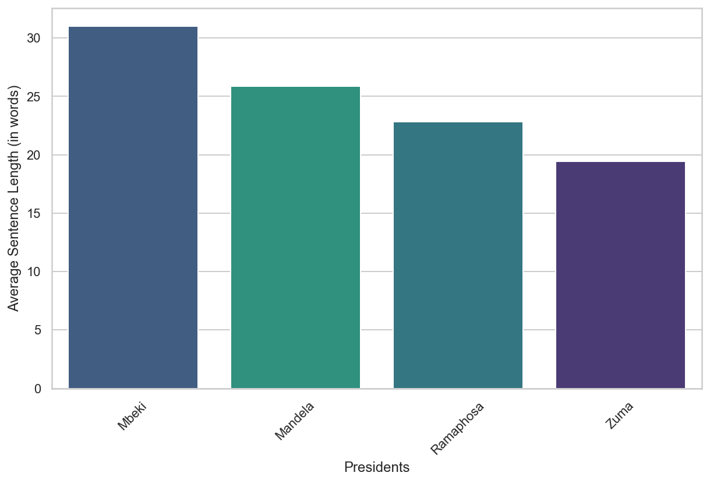
In figure 3, the term “government” stands out as the most frequently used, highlighting the focus on governance in the presidential speeches. References to “South,” “Africa,” and economic terms like “development” and “economic” suggest an emphasis on regional affairs and economic growth. Words such as “people,” “public,” and “national” underscore the significance of civic engagement and national identity.
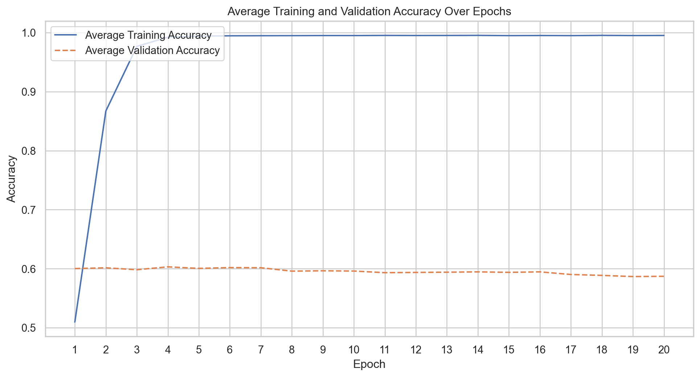
From Figure 4 we can examine the word clouds of South African presidents Mandela, Ramaphosa, Mbeki, and Zuma, noting the distinct thematic priorities that emerge. Mandela’s discourse leaned towards nation-building, emphasizing “government,” “people,” and “national.” Ramaphosa highlighted economic terms like “investment” and “growth,” while maintaining a strong national identity. Mbeki’s governance approach is reflected in terms such as “process” and “system,” with “South African” underscoring unity. Zuma’s tenure was marked by infrastructure and economic themes, seen in “development” and “economy.” Across all leaders, a shared commitment to governance and the South African populace is evident.
Model Evaluation
Accuracy
From the accuracy table (Table 1), it’s evident that the feature extraction method plays a pivotal role in the performance of models when classifying the origin of SONA presidential sentences. When employing the Bag of Words technique, the Support Vector Machines (SVM) model yields the highest accuracy at 59.354%, closely followed by Neural Networks with 58.797% and Boosted Trees (Catboost) at 56.182%. The TF-IDF method sees a similar trend, with SVM leading at 61.471%, Neural Networks registering 59.581%, and Boosted Trees (Catboost) trailing slightly at 55.569%. It’s noteworthy that SVM attains its peak accuracy with the TF-IDF extraction method. However, all three models exhibit a sharp decline in performance when using Word Embeddings, with accuracies plummeting to below 34%. This indicates that, for this particular task, traditional methods like Bag of Words and TF-IDF outperform Word Embeddings. It should be noted that the word embeddings feature extraction despite setting a random state, varied in its performance across different runs, though across all runs still performed the worst of all feature extraction methods investigated in terms of accuracy.
Table 1: Accuracy across models and feature extraction methods
F1 Score
The F1-Score table (Table 2) provides insights into the harmonic mean between precision and recall for different models and feature extraction techniques. Using the Bag of Words method, Neural Networks achieve the highest F1-Score at 58.113%, slightly ahead of Support Vector Machines (SVM) which scored 57.850%. The Boosted Trees (Catboost) model lags a bit behind with a score of 53.552%. When the TF-IDF extraction technique is applied, SVM emerges as the top performer with a score of 60.121%. This is followed closely by the Neural Networks model with an F1-Score of 59.113%. Again, Boosted Trees (Catboost) secures the third position, achieving an F1-Score of 53.294%. However, when Word Embeddings are used for feature extraction, there is a notable drop in performance across all models. The Neural Networks model fares the best in this category with an F1-Score of 26.420%, while both SVM and Boosted Trees (Catboost) register scores below 15%. The stark contrast in performance when using Word Embeddings, compared to the other two methods, underscores its limitation for this specific task.
Table 2: F1-Score across models and feature extraction methods
Bag of Words
Boosted Trees
Figure 5 shows the mean loss over each 5-fold cross-validation over 300 epochs over the boosted tree. Both losses exhibit a downward trend, signifying improvement in model performance with successive iterations. The training loss demonstrates a consistent decrease, reflecting the model’s enhanced fitting to the training data. Concurrently, the validation loss also descends, suggesting improved model generalization to unseen data. Notably, the training loss decreases at a slightly accelerated rate compared to the validation loss. This observed trend warrants careful monitoring to prevent potential overfitting, ensuring the model maintains its predictive accuracy on external datasets.
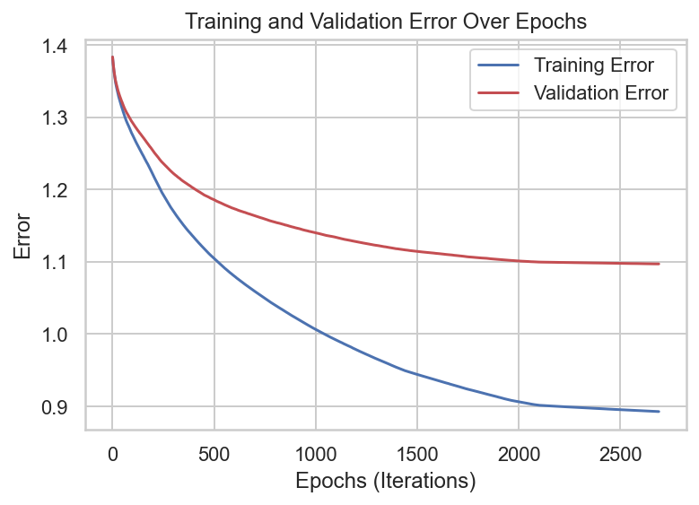
Figure 6 shows the Boosted Tree’s performance for the categories: Mandela, Mbeki, Ramaphosa, and Zuma. For correct classifications: 93 for Mandela, 278 for Mbeki, 253 for Ramaphosa, and 385 for Zuma, indicating varying degrees of accuracy across classes. Notably, the Boosted Tree’s is most accurate when predicting Zuma and least accurate for Mandela.

Neural Network
Figure 7 Shows the mean training and validation accuracy across 20 epochs using 5-fold cross-validation on the training dataset. We observe little evidence of significant learning in the validation set over the epochs, with the validation accuracy remaining constant over the 20 epochs. Hence given this the final model selected was chosen to run on 2 epochs. A possible reason for this could be the choice of the kernel weight initializer which provides a non-naive initial set of weights for the NN.
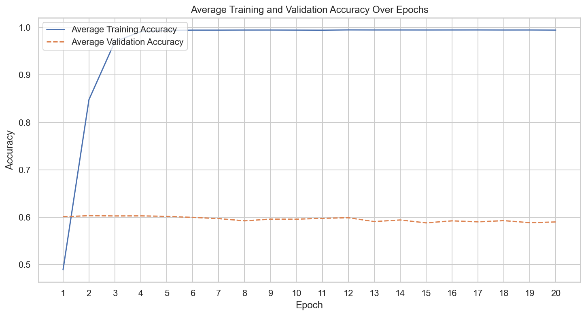
In Figure 8 Neural Network classifier exhibits varying degrees of classification accuracy across different classes. For Mandela, out of 334 instances, 170 were correctly classified, with an accuracy of 50.9%. The Mbeki class had 264 (55.0%) a. The classifier achieved higher accuracy for Ramaphosa, correctly classifying 291 (63.8%). The highest accuracy was observed for the Zuma class, with 331 (62.9%).
With respect to the misclassifications: Mandela was often misclassified as Mbeki (92 instances) or Zuma (45 instances). Mbeki instances were misclassified as Mandela (91 instances) and Zuma (76 instances). There were 97 Ramaphosa instances misclassified as Zuma. For the Zuma class, there were 88, 52, and 55 instances misclassified as Ramaphosa, Mandela, and Mbeki respectively.
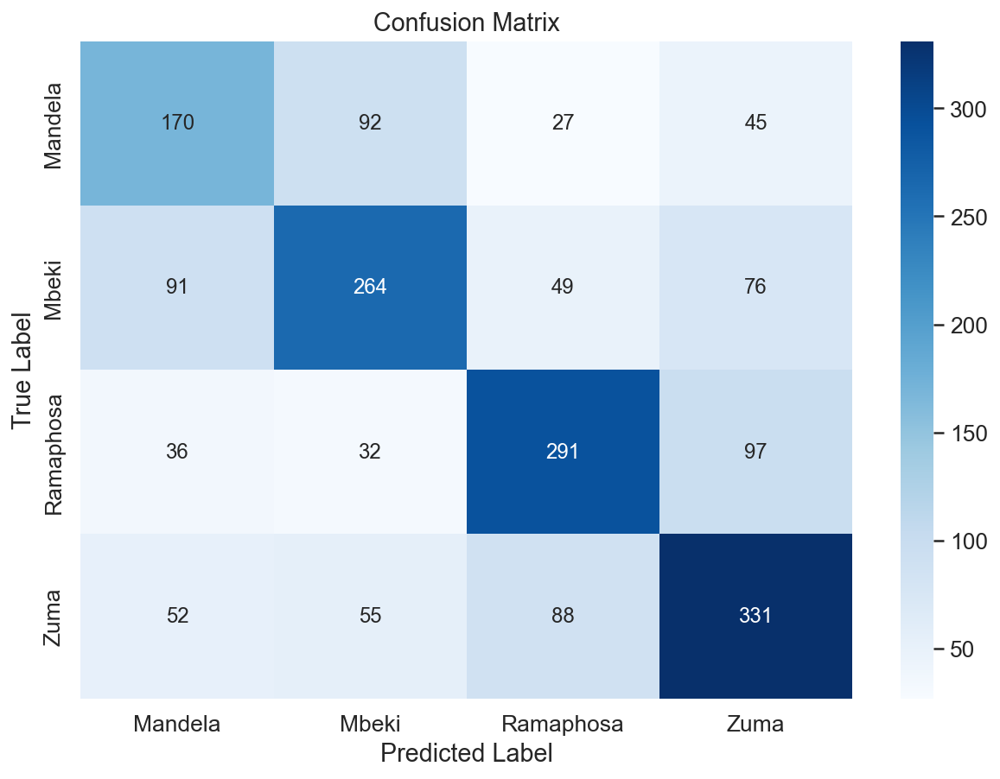
SVMs
Figure 9 shows for the Mandela class, there were 139(41.6%). The Mbeki class had an accuracy of 54.8%. The classifier was more accurate in identifying Ramaphosa, correctly classifying 271 (59.4%). The highest classification accuracy was observed for the Zuma class, with 393 correct, achieving 74.7% accuracy.
Patterns of misclassification were also observed across the classes. For instance, Mandela was often misclassified as Mbeki (80 instances) and Zuma (77 instances). Instances of Mbeki were misclassified as Mandela (71 instances) and Zuma (99 instances). Notably, Ramaphosa was misclassified as Zuma in 126 instances.
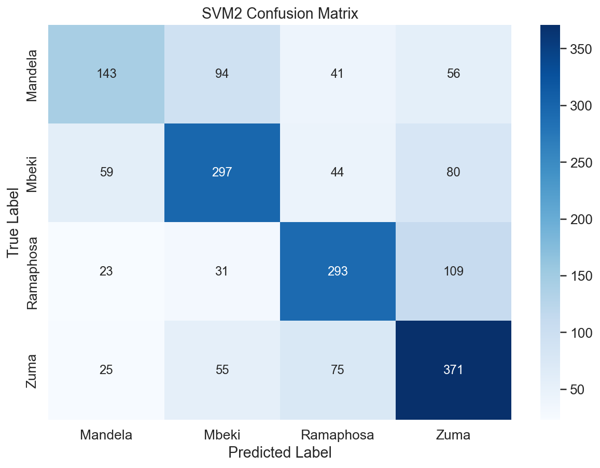
TF-IDF
Boosted Trees
The results of the training over epochs for the GBT model using TF-IDF can be seen in the appendix(Figure A1), though are largely the same in behaviour as the GBT model trained using the BoW feature extraction. Hence the final model chosen has the same hyperparameters. The confusion matrix for the Gradient Boosting Trees (GBT) classifier (Figure 10) reveals a classification accuracy of 28.7% for Mandela, with 96 correct predictions. The Mbeki class demonstrated a higher accuracy of 59.2% with 284 correct predictions from 480 instances. The Ramaphosa class was accurately identified in 261 out of 456 instances, yielding an accuracy of 57.2%. The Zuma class exhibited the highest classification accuracy at 68.3%, with 359 correct predictions from 526 instances. In terms of misclassifications, these appear less pronounced but we do see, that Mandela was often confused with Mbeki (113 instances).
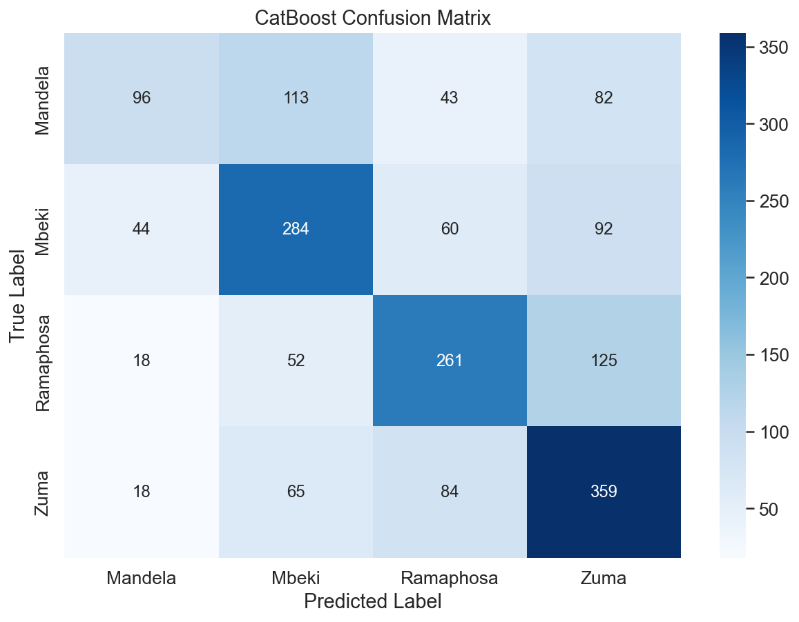
SVM
Looking to Figure 11 for the SVM classifier using TF- IDF feature extraction the confusion matrix denotes: Mandela at 42.8%, with 143; Mbeki at 61.9%, with 297 correct predictions; Ramaphosa at 64.3%, with 293 correct predictions; and Zuma at 70.5%, with 371 correct predictions.
In terms of notable misclassifications, the classifier misidentified Ramaphosa 109 times as Zuma.
Neural Net
Figure 12 illustrates the confusion matrix for the NN trained using TF-IDF feature extraction. For Mandela, the NN secured 182 correct predictions (54.5%). The Mbeki class observed an accuracy of 60.6% with 291 correct predictions. For Ramaphosa, 276 correct predictions were made (60.5%). The highest accuracy was noted for the Zuma class, with 321 with an accuracy of 61.0%.
In terms of misclassifications, we note similar patterns in misclassifications between Zuma and Ramaphosa.
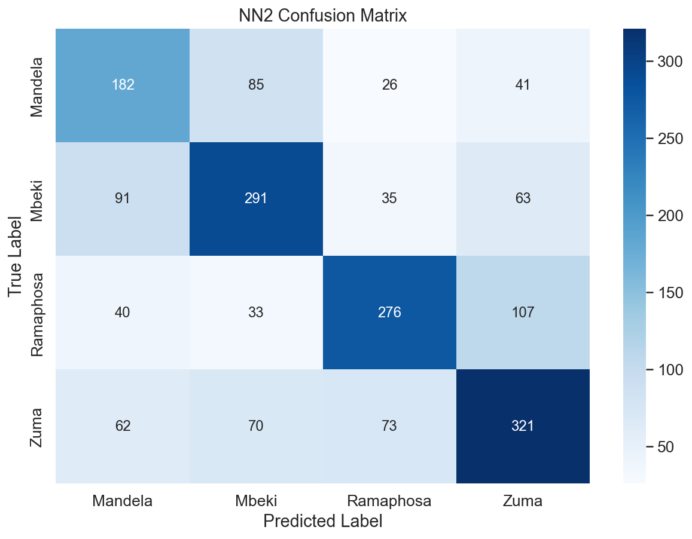
Word Embeddings
Catboost
Figure 13 shows confusion matrix of the GBT using word embeddings. For the Mandela class, out of 334 instances, there were no correct predictions, resulting in a classification accuracy of 0%. The Mbeki class similarly did not have any correct predictions, but 3 instances were misclassified as Mandela. The Ramaphosa class achieved the highest accuracy, with 505 correct predictions, translating to an accuracy of 96%. The Zuma class had 14 correct predictions, yielding an accuracy of 3.1%.
The significant misclassifications into the Ramaphosa class from other categories suggest a strong bias in the classifier towards this class, which is concerning yet somewhat unsurprising given the model’s performance in terms of accuracy and F1-score.
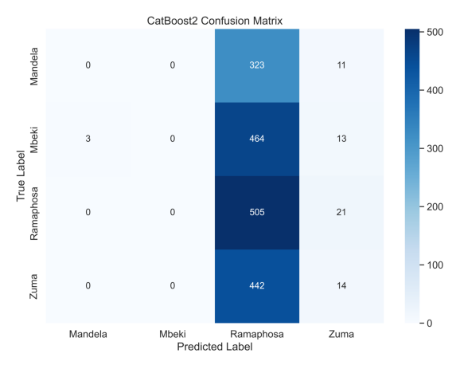
SVM
In Figure 14 we see the word embeddings SVM confusion matrix: The model upon investigation here has failed greatly. It has simply predicted all sentences belonging to Ramaphosa and hence cannot be interpreted at any meaningful level.
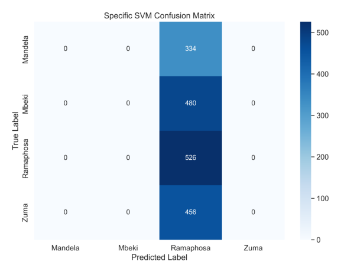
Neural Network
We finally examine the confusion matrix for the NN using word embeddings in Figure 15. The Neural Network classifier’s performance varied across the classes. In Mandela’s class, none were correctly predicted, with 235 instances being misclassified as Ramaphosa. The Mbeki class had a somewhat better accuracy of 28.3%, securing 136, but a notable 323 instances were erroneously labelled as Ramaphosa. The classifier’s strongest performance was with the Ramaphosa class, achieving an accuracy of 81.9%, correctly predicting 431 instances. The Zuma class resulted in an accuracy of 9.0%, with 41 accurate predictions from 456 instances. However, a significant number, 347 instances, were mislabeled as Ramaphosa.
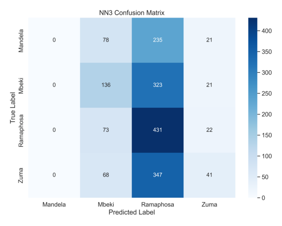
Discussion
The findings of this study emphasize the pivotal role of feature extraction methods in classifying sentences from SONA speeches of various South African presidents. Of the three feature extraction methods, traditional methods (BoW and TF-IDF) consistently outperformed Word Embeddings across the predictive models used.
The superior performance of SVMs, especially when paired with TF-IDF features, is noteworthy. This could be attributed to SVM’s inherent ability to efficiently handle high-dimensional data spaces and its adeptness at discerning intricate patterns from the SONA speeches. Such capability highlights SVM’s robustness, especially when dealing with text data that may have nuances in vocabulary and structure.
An observation from the data exploration phase was the imbalance present in the dataset. Zuma’s significant representation, contrasted with the sparse data associated with figures like de Klerk and Montlanthe, was an evident challenge. These imbalances can lead models to be biased towards overrepresented classes. This bias was manifested in the Gradient Boosted Trees model’s strong inclination towards the Ramaphosa class when utilizing Word Embeddings. Addressing this imbalance in future studies, perhaps through techniques such as oversampling or the generation of synthetic data, may yield more balanced and generalizable results.
The variations in average sentence lengths across different presidents also offered intriguing insights. For instance, Mbeki’s inclination for longer sentences could suggest a more detailed or intricate discourse style. Such differences might be indicative of unique communication styles, rhetorical strategies, or focal points.
The consistent decline in performance across all models when utilizing Word Embeddings was a surprising outcome. One potential explanation could be that the embeddings, especially if pre-trained on generic corpora, may not be adept at capturing the linguistic nuances of SONA speeches. This underscores the importance of domain-specific training or fine-tuning when dealing with specialized datasets.
The results from the Neural Networks, while promising, did not significantly overshadow the simpler SVM model. Given the depth and potential of Neural Networks, it might be beneficial to explore more exhaustive hyperparameter tuning or even delve into more advanced architectures. Sequence models, such as Recurrent Neural Networks (RNNs), which have demonstrated prowess in capturing the sequential nature of linguistic data, might be particularly promising for future iterations of this study. The computational efficiency of the SVM especially when compared to NNs, GBTS, and transformer transfer learning models like BERT underscores the value and impressive performance of SVMs in NLP classification tasks.
Conclusions
In summary, while the study has successfully delineated the linguistic tendencies across various South African presidents, it has also highlighted challenges and potential avenues for refinement. The interplay of feature extraction methods, model selection, and data intricacies presents a complex landscape, emphasizing the multifaceted nature of political speech classification. Future research can build upon these findings, integrating more advanced models, addressing dataset imbalances, and potentially fusing insights from other academic disciplines like linguistics and political science for a holistic understanding. Though, this paper has succeeded in critically examing the landscape of NLP classification, providing a robust direction for work in political NLP classification and detailed analysis and evaluation of the methods available.